Bloom's Backstory
Bloom is a productivity browser extension designed to solve the problem of switching between applications and eliminate inefficiencies in your browser workflow.
This extension is based on my two previous projects: Bloom (↗) - a prototype self-help platform designed to help users find motivation - and CollabLearn (↗) - a versatile collaboration platform for students and researchers, featuring new interview-based tools and a workspace designed to boost their productivity in both group and individual projects.
The ideas behind the CollabLearn and original Bloom prototypes have led to the creation of a single, real-world tool that will led to a single tool that solves the problems behind both projects for real people - the Bloom browser extension (↗).
Note: I created the entire project from scratch, including the UX and UI design.
Code: built with Claude Code.
The Bloom Extension Development Process
1. Context
Today, modern professionals spend a large part of their workday inside web browsers - researching, studying, and managing their tasks.
Yet browsers' UI and UX fall short of users' needs.
People face constant distractions and app switching, even though...
... the browser has effectively become an extension of their physical workspace and should therefore feel comfortable and productive.
2. Challenge
Develop an all-in-one productivity tool in the form of a browser extension that fits within a compact 400px popup, serving as a seamless extension of the browser workspace.
The solution must be highly adaptable to support diverse work styles and needs.
3. Solution
Bloom is a browser extension designed to address the challenge of switching between applications while working in a browser, as well as to bring together productivity tools in one place.
I developed an all-in-one productivity tool as a browser extension that brings together a Pomodoro timer, to-dos, notes, and ambient soundscapes - a complete focus kit housed in a compact 400px popup.
To support different types of work, three distinct modes were designed:
- Classic – for general daily tasks and focused work
- Research – optimized for reading and deep research
- Creative – tailored for UX/UI designers, and artists
The starting point in finding the right solution was asking the right questions about this problem.
HMWs
- How can we design a browser interface that minimizes mental overload and promotes sustained, focused work?
- How can we integrate features for focus, task management, and creating a calm environment into the browser so that users can stay in a state of “flow” without leaving their main workspace?
- How can we transform the browser from a source of distractions into a unified environment for productive work?
Problem Statement: People stop using concentration apps not because they don't work - they stop using them because these apps don't fit into the digital workspace; they seem cold, inflexible, and forgettable.
Development Phase
Development of the Bloom extension has largely focused on addressing productivity issues in the browser’s digital workspace.
To address these issues, several different modes were developed, including:
- Classic Mode — for everyday tasks: notes, a Pomodoro timer, and to-do lists
- Research mode — for reading long documents and working with text
- Creative Mode — for designers who want to explore the colors and fonts of the websites they visit
Classic Mode
Classic mode is designed for simple everyday tasks.
I had to design it with all users’ needs in mind, while trying to fit it into a pop-up window with a maximum width
of 800 pixels and a maximum height of 600 pixels.
It includes the following tools by default:
- Pomodoro timer
- To-Do List Creation Menu
- Notes taking
- Ambient sounds for work
- Tab group creation menu
How Each Tool Works
Pomodoro timer
Users open the menu and choose one of the preset time modes, or adjust the length of focus sessions and breaks - and how many of each - below.
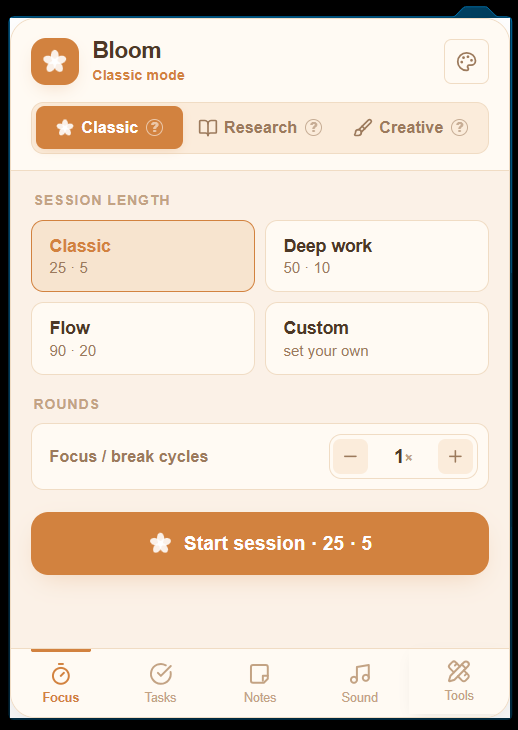
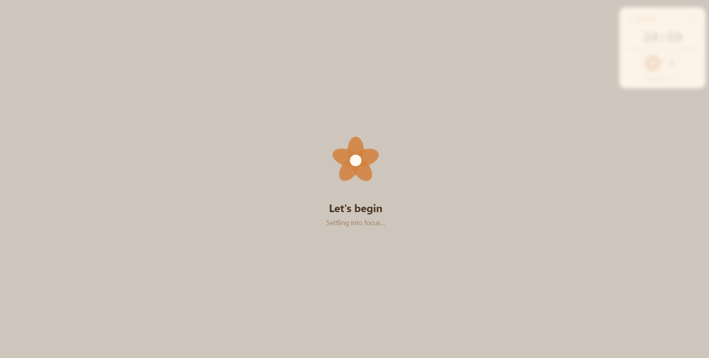
To-Do List Creation Menu
The task creation feature: users build a to-do list and check items off as they finish them.
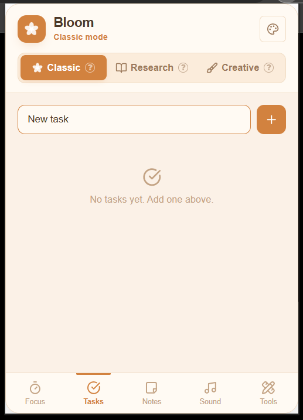
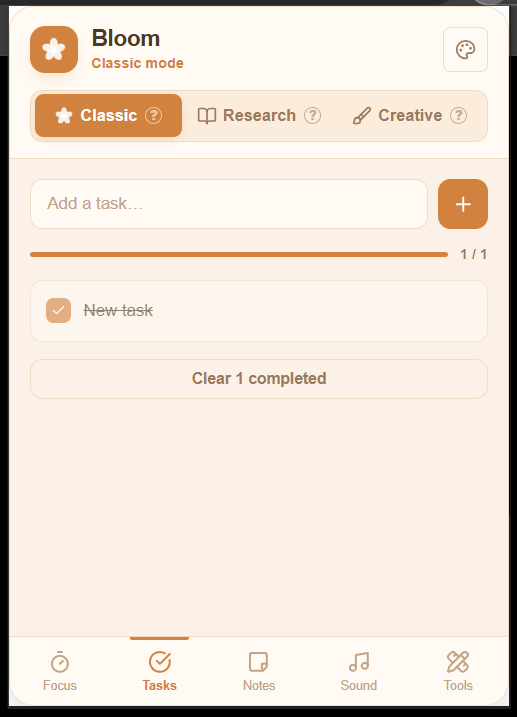
Notes taking
With the “Notes” tool, users can quickly take notes right while they're working.
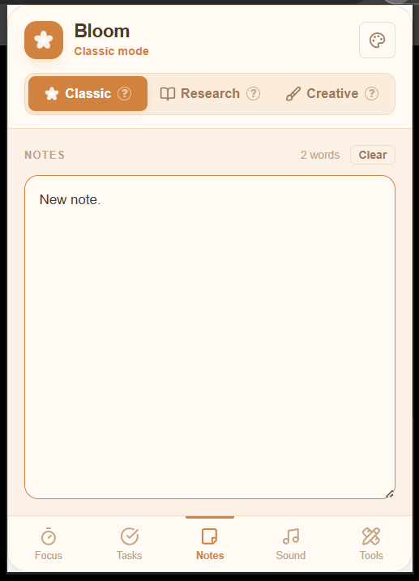
If a user no longer needs a note, they can delete it by clicking the “Clear” button. A warning window will then appear, allowing the user to confirm or cancel the deletion.
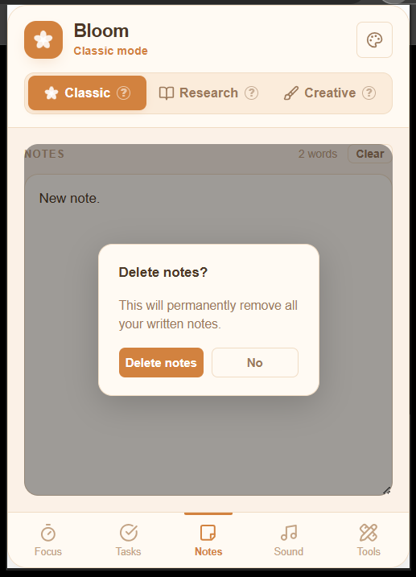
Ambient sounds
When a user needs background sound to help them concentrate, the Bloom extension offers 8 different background sound options.
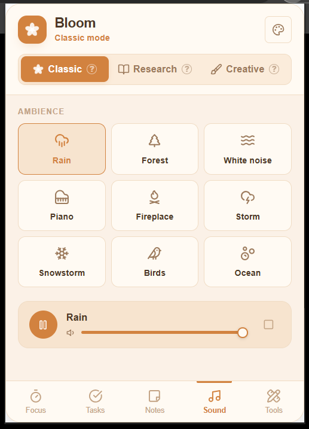
Tools Menu in Classic Mode - Tab group creation menu
I added a built-in feature to the Bloom extension that allows users to create tab groups as a default tool, which can be easily accessed through the “Tools” menu.
There, users can create a group for their open tabs and give it a custom name.
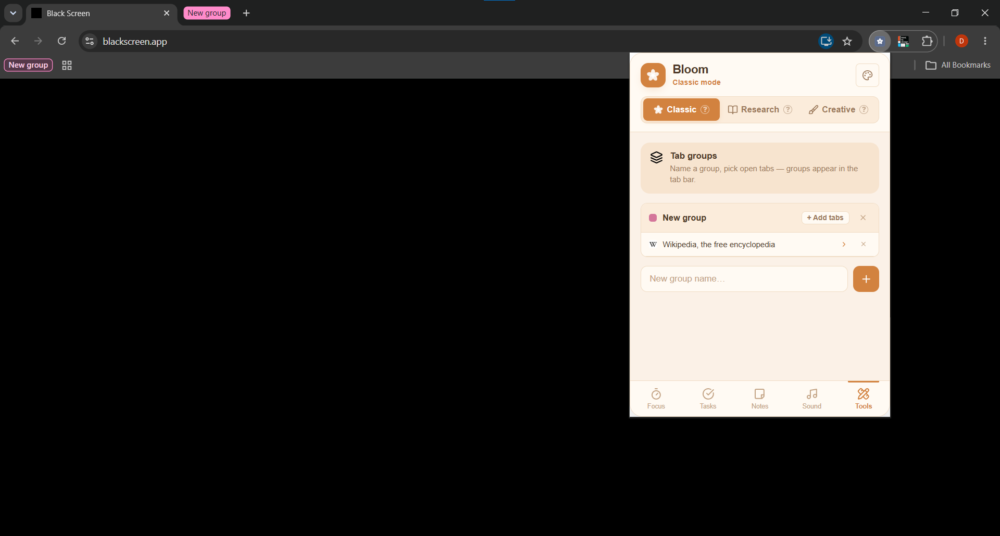
Research Mode
Reading Mode is designed specifically for reading long articles in a browser and working with documents.
It includes the following tools:
- Focused reading - dim the screen, highlight the text
- Reading Mode - condenses the page into a single column for reading
- Page Font Changer Tool
- A tool for adjusting font weight, font size, line spacing, character spacing, word spacing, and column width.
- Reading Time + Progress Tracker
- Page Tint Tool
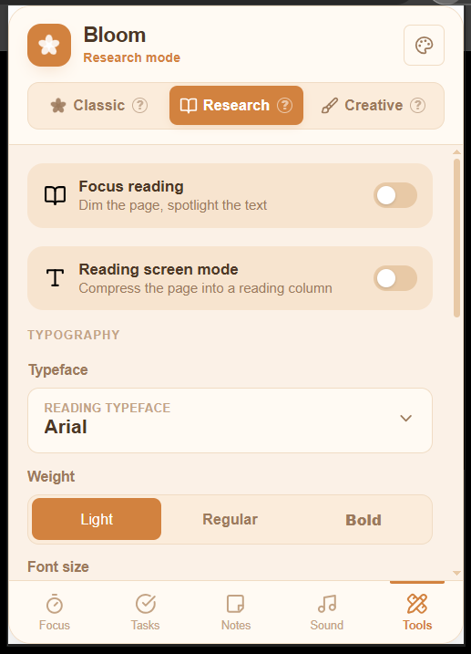
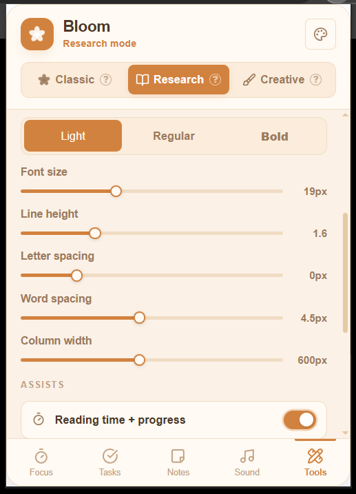
Reading Time + Progress Tracker; Page Tint Tool
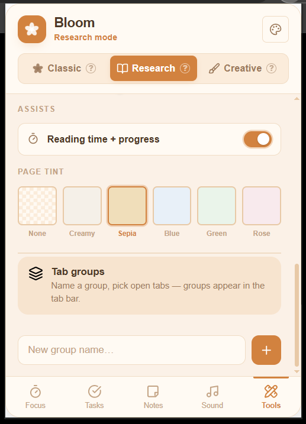
Creative Mode
In Creative Mode, users can scan a page to extract colors and fonts from it. Once extracted, the color codes, as well as the font names and sizes, are saved in the Creative Mode toolbar.
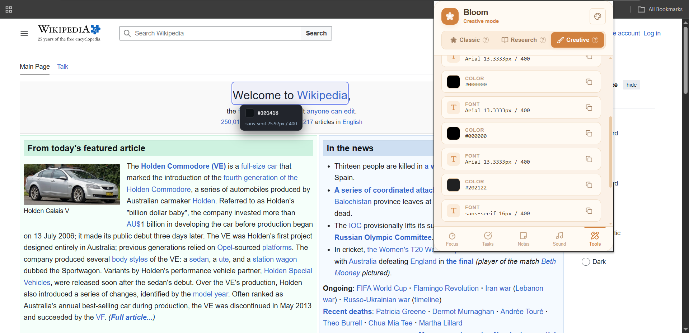
Color themes
Since one of the goals was to make working in the browser's digital space more convenient for all users, in addition to the existing tools and features, the ability to customize was needed.
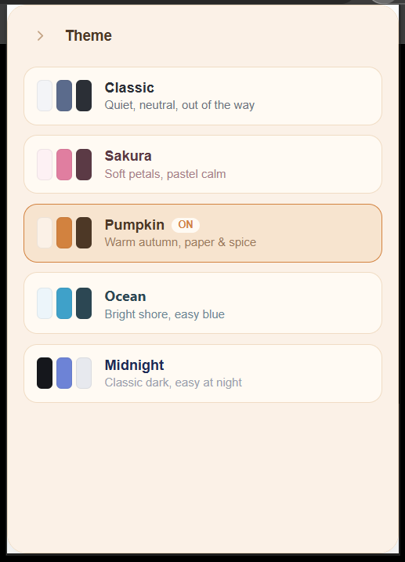
Final thoughts
This project was a real adventure for me, since I built it all by myself from scratch. Projects like this are always the most valuable, because they are the very source of growth - in the uncertainty and the lack of specific knowledge that you have to acquire in order to accomplish the task at hand. As part of the Bloom extension project, I needed to gain a deeper understanding of how browsers work and their limitations, and learn how to apply that knowledge to improve my product. It was an amazing project, and I don't regret doing it one bit.